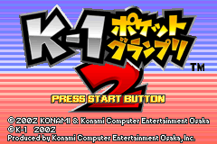
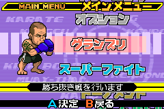
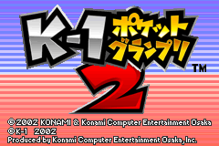
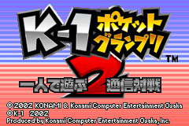

K-1 Pocket Grand Prix 2 (Japan)
EEPROM 4K gbakit Built-In 🎮 Button Cheat 💾 MultiBoot 🎮 4P Link
Cartridge Identity
- Game Code
A2OJ(FamilyA2O)- Header Title
K-1POCKE_GP2- Maker / Revision
A4/ rev0- ROM Size
- 8.0 MiB (8,388,608 B)
- Save Media
EEPROM 4K- SHA-256
f6ae7dc77300ff68fd1e7b0096727d3064d2d11a4e6c7f322534c9a87e33d7d9- Engine / SDK Group
comm-002(145 families)
Screenshots


Verified Button-Combo Cheat
Zero-patch retail controller cheat (Wave 3): 4-way counterfactually verified in headless
libmgba. See all verified titles in the Button-Combo Cheats Catalog.
- Effect
- Hidden Konami-Style Button-Combo Unlock (ROM table 0x0812f084)
- Button Sequence
UP, UP, DOWN, DOWN, LEFT, RIGHT, LEFT, RIGHT, B, A- Verification Verdict
- Visual + RAM Unique Reaction
- Target RAM Address
0x0300000C- ROM Table Address
0x0812f084- Timing Protocol
boot=540f,hold=6f,release=6f,settle=60f- Activation Indicator
- Headless libmgba 4-way counterfactual verified: unique 240x160 framebuffer and RAM/VRAM state transition distinct from control, wrong, and reversed inputs
gbakit cheat verify A2OJ

Link Cable & Multiplayer Communications
This title contains detected communication capabilities: 💾 MultiBoot 🎮 4P Link.
Detailed protocol specifications, SIO registers, Joybus commands, and MultiBoot sequences are documented in the Link & Multiplayer Reference.
- Multi-Player SIO (4P)
- 16-bit ring network · SIOCNT (
0x04000128) literals:0x002428,0x0024a8,0x0024d4· SIODATA32/SIOMULTI0 (0x04000120) literals:0x00283c - Single-Cart MultiBoot
- Single-Cartridge MultiBoot (Download Play) client/server handler · Thumb SWI 0x25 (
0xDF25):0x06a162,0x0a52b2,0x0a8d8c,0x0b12ec
Battery Save Support in gbakit
Built-in definition (A2OJ)
gbakit save verify A2OJ save.sav
gbakit save decode A2OJ save.sav
gbakit save fix A2OJ damaged.sav -o repaired.savROM Assets, Compression & Audio
- BIOS Compression
- LZ77 (
0x10): 85 streams · RLE (0x30): 0 streams - ROM Pointer Tables
- 31 tables (2 pointing to validated compressed streams)
- SDK Backup Tags
EEPROM_V122
Asset Map (formatkit.asset-map.v1)
Download A2OJ-r0-f6ae7dc77300ff68.asset-map.json.gz (116,405 B (113.7 KiB)) Verified PASS · 9.61% coverage
| Metric | Bytes / Value | Entries |
|---|---|---|
| Identified | 646,740 B (631.6 KiB) (7.71%) | 1,005 |
| Mapped | 0 B (0.00%) | 0 |
| Opaque | 159,127 B (155.4 KiB) (1.90%) | 1 |
| Unknown | 7,582,741 B (7.23 MiB) (90.39%) | 992 |
| Total ROM Size | 8,388,608 B (8.00 MiB) | 1,998 |
| Coverage % | 9.61% | — |
| Entries w/ Code Refs | 1,027 / 1,998 (51.40%) | — |
Top Identified Formats: compress.bios-lz77 (89 · 561,332 B (548.2 KiB)) · gfx.gba-palette (914 · 82,528 B (80.6 KiB)) · audio.m4a-song-table (1 · 2,688 B (2.6 KiB)) · gba.rom-header (1 · 192 B)
Largest unknown Extents (Headerless / Custom Asset Candidates)
| Offset | Size | Shannon Entropy | Code Refs |
|---|---|---|---|
0x0008D880 | 333,552 B (325.7 KiB) | 7.018 bits/B | 0 |
0x00023F5C | 238,520 B (232.9 KiB) | 6.765 bits/B | 8 |
0x00150D1C | 237,988 B (232.4 KiB) | 1.543 bits/B | 0 |
0x0005E334 | 181,344 B (177.1 KiB) | 6.484 bits/B | 0 |
0x001058FC | 137,672 B (134.4 KiB) | 6.904 bits/B | 0 |
gzip -dk A2OJ-r0-f6ae7dc77300ff68.asset-map.json.gz && gbakit map verify rom.gba A2OJ-r0-f6ae7dc77300ff68.asset-map.json
gbakit assets export rom.gba --asset-map A2OJ-r0-f6ae7dc77300ff68.asset-map.json -o out/Text, Fonts & Scene Data
- Primary Text Encoding
- 16-bit / UTF-16LE text (
4ASCII strings ·14Shift-JIS runs) - Font & VWF Indicators
- VWF Width Table 1bpp Font · BIOS SWIs: BitUnPack
0x10:18· LZ770x11/12:21· Huffman0x13:10· RLE0x14/15:17 - Scene & Packaging
11ROM pointer tables (≥32 entries,3≥200) ·2relativeu32TOCs ·111OAM metasprite hits
Hardware MMIO Subsystems
dma_transfer0x800731cppu_display0x800731c,0x800b6f4,0x800e350